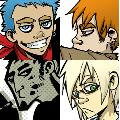

Forums galactiques > Taverne galactique : lieu de discussion informel > Machine a café [Rp!]
Pages : 1 2 ... 429 430 431 ... 443 444
| arwena Réputation à la taverne : 0  05/02 ETU 14:58 | Score : 1 Détails elle se blottie dans ses bras, et sentit une chaleur intense et une douceur l'envahir.
que c'est beau de se sentir aimer, ses baisers sont si doux et pleins d'amour et de sentiments profonds. je resterai bien la le reste de ma vie, mais est ce que cela est possible, ? | ||
| Horohoro Réputation à la taverne : 1130  05/02 ETU 15:01 | Score : 0 Détails Il murmura à son oreille:
Tu sais... Te sentir ainsi blottie contre moi, c'est un bonheur tel que je n'en ai jamais ressenti... Je suis fatigué par les événement des derniers jours... Dormons un peu... Tu veux bien?... | ||
| arwena Réputation à la taverne : 0 05/02 ETU 15:09 | Score : 0 Détails "oui repose toi je veille sur toi"
| ||
| Horohoro Réputation à la taverne : 1130 05/02 ETU 15:13 | Score : 0 Détails Il passa la main dans les cheveux de son aimée...
Merci... Il se laissa sombrer lentement, serré contre Arwena... | ||
| arwena Réputation à la taverne : 0 05/02 ETU 15:18 | Score : 0 Détails que c'est bien de se sentir aimé par quelqu'un de bien, dors mon amour je veille
| ||
| lord skywalker Réputation à la taverne : -22  05/02 ETU 18:50 | Score : 0 Détails Yakuza entra dans le cyber café pris un expresso très sérré et alla s' asseoir seul a sa table regardant son x-com desesperement.
| ||
| Horohoro Réputation à la taverne : 1130 06/02 ETU 12:44 | Score : 0 Détails Kyo ouvrit lentement les yeux...
Il vit Arwena,blottie contre lui, qui semblait s'être endormie elle aussi... Il étouffa un léger baillement, et se redressa doucement. Il aperçut l'horloge,fixée à l'un des murs... | ||
| arwena Réputation à la taverne : 0 06/02 ETU 20:20 | Score : 0 Détails arwena se réveille, et elle vit partir mais pour où!!!!
Voir une autre femme au restaurant? | ||
| Horohoro Réputation à la taverne : 1130 06/02 ETU 21:06 | Score : 0 Détails non j'y suis pour rien moi en fait c'était un gag d'un ami qui joue avec mon compte de temps en temps^^
Il se leva lentement, et s'approcha de la machine à café dans le but avoué de se servir un café... | ||
| Jillian Morpheus Réputation à la taverne : 67  06/02 ETU 21:57 | Score : 0 Détails Un jeune Homme, plutot beau gosse, fit pour la premiere se servir un café dans ce lieu apparement fréquenté par de nombreuses personnes, aux mérites reconnus, et dont la prestence faisait souvent du bruit dans les couloirs de l'Assemblée.
Ne semblant connaitre personne, il se servit un petit café sucré, puis s'installa a une table, seul, guettant les gens qui l'entouraient. | ||
| Angus Young Réputation à la taverne : 419  06/02 ETU 22:37 | Score : 0 Détails Angus, qui guéttait l'arrivé de cet home depuis un certain temps déjà, salua le nouveau venu.
Bien le bonjour monsieur Morpheus. Vous en devez pas trop me connaitre, ou peut-être que votre frère vous a-t-il parlé de moi... Je me présente : Angus Young, ami de Ash et musicien hors-pair. Je vous paye un verre? | ||
| arwena Réputation à la taverne : 0 07/02 ETU 07:09 | Score : 0 Détails soulagé de le voir se diriger vers la machine à café,
Elle soupira,ce n'est qu'un rêve. Il n'est pas du genre a courir aprés d'autres femmes, c'est un homme bien, et hônnete. j'ai confiance en lui. | ||
| Mystèrax Réputation à la taverne : 1216  07/02 ETU 14:09 | Score : 0 Détails Sophie entra à la Machine à Café pour a première fois depuis quelques jours. Il y avait là quelques personnes qu'elle ne conaissait pas, et dit un rapide "Bonjour".
Ensuite, elle prit un capuccino, et s'assit à une table, seule. Elle commença alors à déguster son capuccino, tout en réfléchissant aux différents évènements qui se sont succédé en peu de temps. | ||
| Rendillion Réputation à la taverne : 675  07/02 ETU 14:15 | Score : 0 Détails Rendillion avait une mine creusée par la fatigue et les soucis.
Les diparitions s'accumulaient, la politique s'engluait et les anciennes amitiés n'étaient plus. Peu de plaisir il prenait ces temps ci, et c'est presque en désespoir de cause qu'il se dirigeât vers la Machine à Café. | ||
| Mystèrax Réputation à la taverne : 1216 07/02 ETU 14:21 | Score : 0 Détails Perdue dans les méandres de sa rélféxion, Sophie ne s'apperçû pas tout de suite que Rendillion venait d'entrer à la MAC. Il fallut un certain à son cerveau pour faire le lien entre le passage de Rendillion devant elle, et le fait qu'il s'agissait de lui-même.
Aussitôt ce lien fait, son coeur se mit à battre un peu plus fort. Cela faisait longtemps qu'elle ne l'avait plus vu, et encore plus qu'ils n'avaient pas discuté ensemble. Elle lui fît signe de venir s'assoir, et commença à parler : "Salut!! Ca va?" A ce moment, elle apperçut ses traits creusés, son tein pâle, et ses cernes sous lesyeux. "Dis donc, tu m'as l'air bien fatigué! Quelque chose qui cloches??" | ||
| Rendillion Réputation à la taverne : 675 07/02 ETU 14:27 | Score : 0 Détails Rendillion passa au milieu d'un petit comité de personnes, sans même adresser un bonjour, sachant de toutes facons que la politesse ne fait plus loi en Espérance.
Ayant traversé, il continua son chemin quand une voix connue le fit sortir de ses pensées. Il reconnut Sophie. "Oh, bonjour Sophie. Je ne pense que pas la description de mes soucis serait un excellent sujet de discussion. Depuis le temps que je ne t'ai vue, je n'ai pas forcément envie de passer pour un pleurnichard mais plutôt profiter du moment avec toi." | ||
| Mystèrax Réputation à la taverne : 1216 07/02 ETU 14:38 | Score : 0 Détails Au moins, c'était direct...
Sophie avait remarqué depuis un moment qu'il n'aimait pas vraiment parlé de lui-même, et qu'il cherchair souvent un moyen quelconque pour détrouner la conversation. Encore une fois, c'était ce qu'il avait fait. Tant pis, il finirait bien par se confier un jour ou l'autre. "Si tu le dis! répondit-elle en souriant Parlons d'autre chose alors! Est-ce que tu as vu, les Galeires Lafayotte ont ouvert un nouveau magasin au marché? Tu m'y accompagnerais faire un tour???" | ||
| Rendillion Réputation à la taverne : 675 07/02 ETU 18:24 | Score : 0 Détails Rendillion était d'abord pas très envieux de ce bain de foule, mais rapidement il se rendit compte que pour une fois que Sophie proposait, il était plutôt conseillé de refuser.
" Excellente idée, allons voir cette nouvelle splendeur!" Rendillion prit la main de Sophie et l'entraina vers la porte, en direction des Galeries. | ||
| Horohoro Réputation à la taverne : 1130 09/02 ETU 00:52 | Score : 0 Détails La porte s'ouvrit dans un grincement plaintif...
Une silhouette se glissa dans la salle. les mains dans les poches,le jeune Fullmetal s'avanca vers la machine à café. Il laissa échapper un soupir... La nuit allait être longue, et probablement blanche avec ça. Les documents s'étaient entassés, et devait à présent s'occuper de tout cela... Il se servit un café noir, et se dirigea ensuite vers le fauteuil. | ||
| Faresbourg Réputation à la taverne : 18  09/02 ETU 01:06 | Score : 1 Détails On sort de Parisii et on entre dans cette salle, ou se trouve déja un jeune homme, un peu plus jeune qu'eux, occupé à remplir de la paperasse.
Pendant que moi et Slush s'asseyons à une table près du jeune, E.T va chercher deux grands cafés et un chocolat chaud, le dernier pour Slush, qui ne supporte pas la caféïne. Y'est pas un peu jeune, pour remplir tout ces papiers la, lui?Dit Slush, en jetant un coup d'oeil au blondinet. -Hmm... c'est vrai. Pfouf... je suis fatigué! Drôle! Normalement c'est moi qui suis fatigué... -Sais pas, tu guéris peut-être! Mais non, il restera toujours malade. Aucun espoir, sa maladie étant génétique. Ce n'est qu'une accalmie, provoquée sans doutes par l'air plus pur d'Ambassade. |
Pages : 1 2 ... 429 430 431 ... 443 444
Forums galactiques > Taverne galactique : lieu de discussion informel > Machine a café [Rp!]